Intro
I want to create a plant wall that is autonomous, because I am terrible at taking care of them.
- Covering watering and light.
- Just choose the amount of light and water.
- Selectable plants, to have pre-built profiles?
- Stackable.
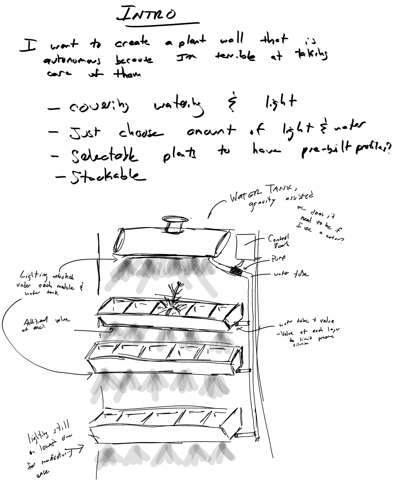
Scroll down to join me through this journey, or click the tabs to jump around.
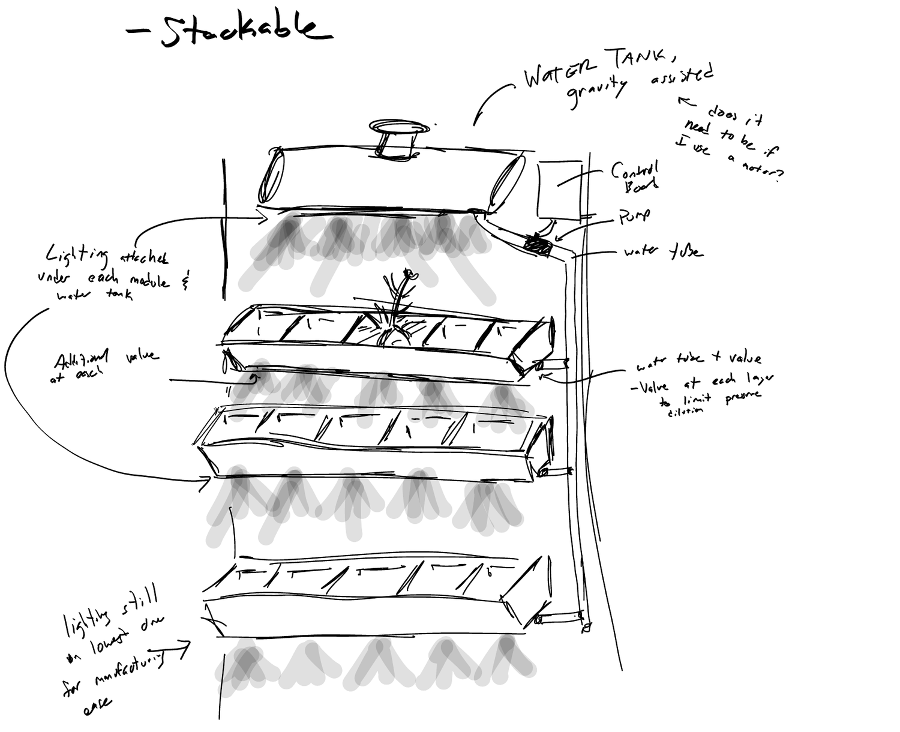
A self watering, self lighting plant wall, planned from the first sketches.
View project →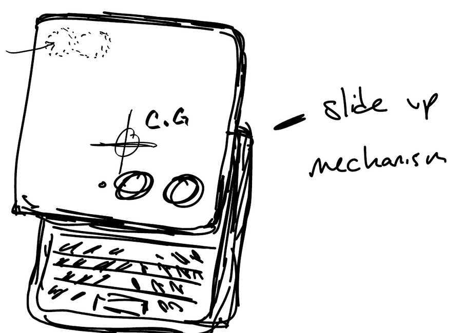
Retrofitting a flip RAZR with a BlackBerry keyboard.
View project →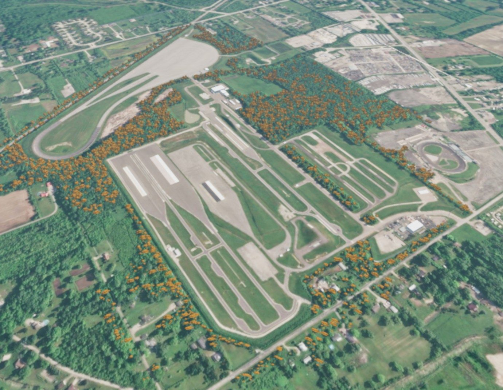
A custom track built for BeamNG.
View project →I want a plant wall that looks after itself, because I am terrible at taking care of plants. This is my planning journal so far, section by section, from my sketchbook.
Full notebook: open the BOOX notebook
I want to create a plant wall that is autonomous, because I am terrible at taking care of them.

What I wrote down before building anything.
The parts I think I need.
The water path as a block diagram: tank, pump, flow rate sensor, then a row valve for each row and a valve for each planter.
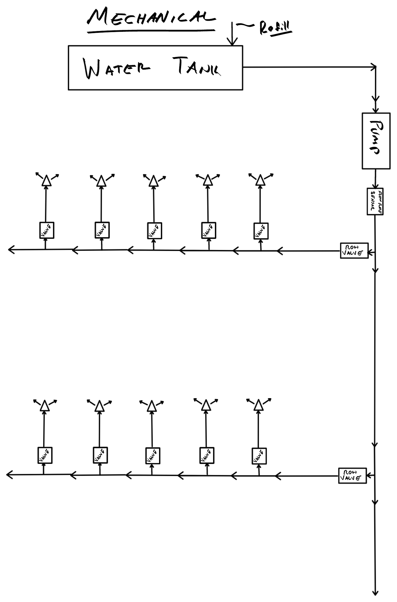
A first sketch of a single planter, with the water outlet, the hygrometer and the valve marked.
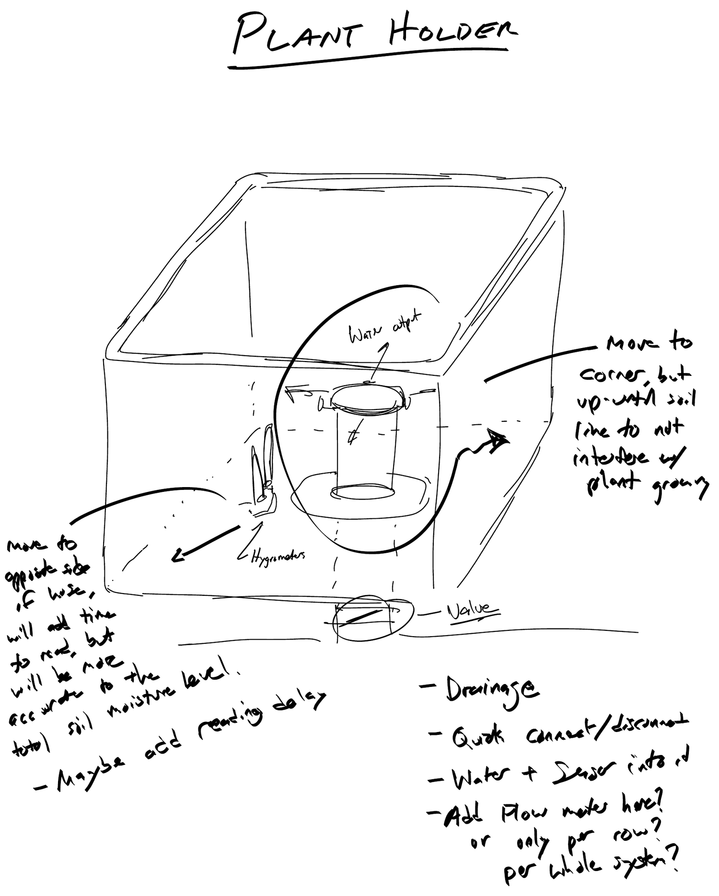
What the firmware has to check and keep.
Nothing written here yet. The page in my notebook is just the heading for now.
Only two lines so far.
How a person will set it up.
With a flow meter, I will need to compare the actual water out against the calculated amount.
This is probably affected by the total number of shelves. What is the minimum number of sensors I can get away with?
Water amount versus soil moisture level. Probably not linear, so I will need a curve parameter.
I want a slide-out keyboard phone, so I am retrofitting a flip RAZR with a BlackBerry keyboard on a donor Motorola Razr Plus. This is my build journal, newest thinking at the bottom, starting with the first sketches.
Full notebook: open the BOOX notebook
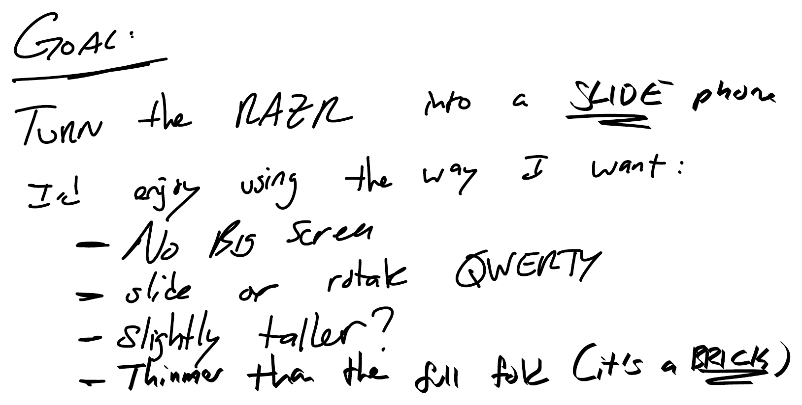
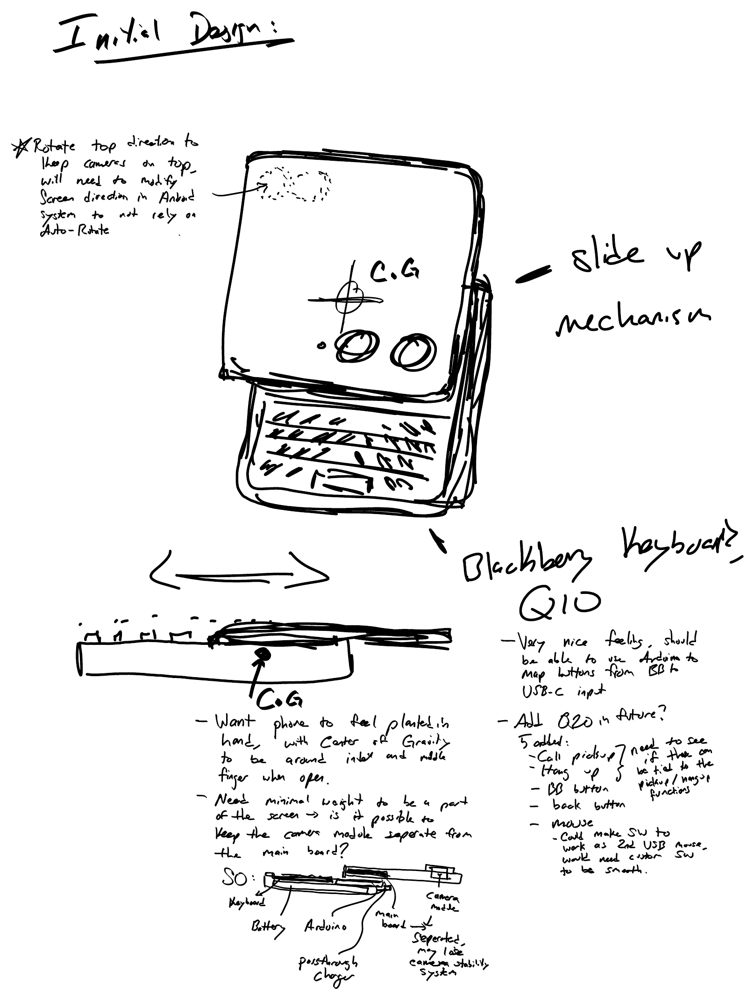
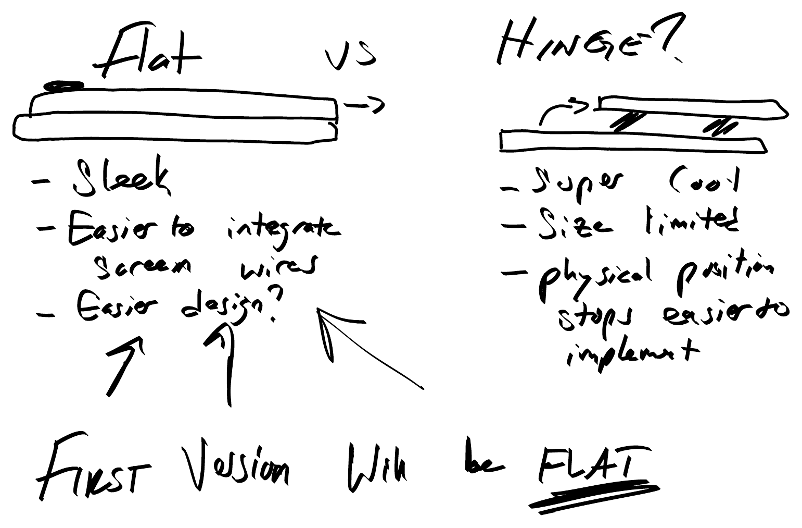
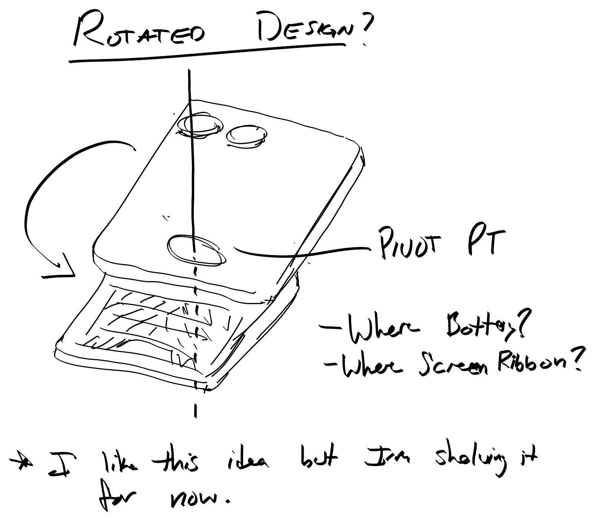
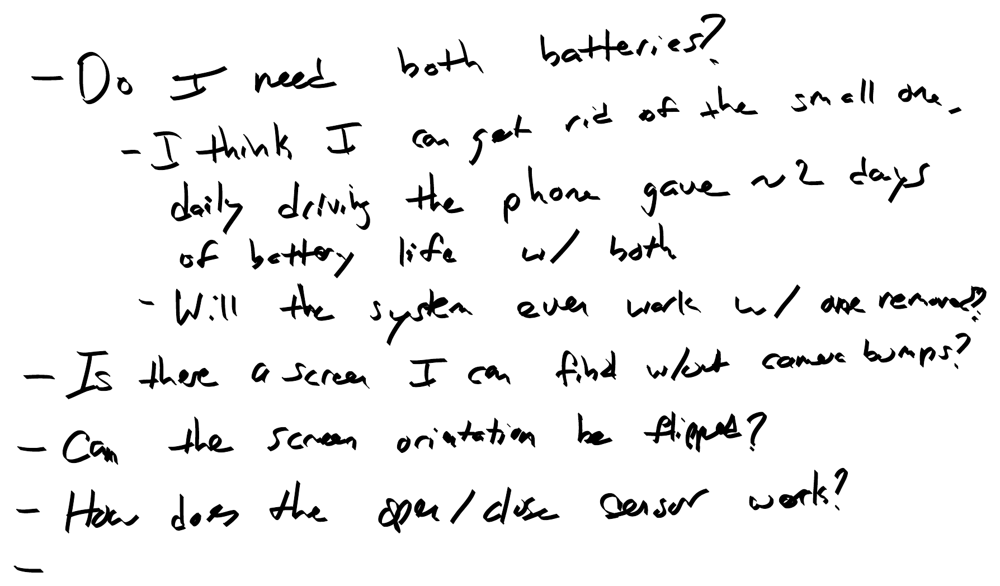
Make a modern QWERTY keyboard device that slides out. It keeps a small screen and modern hardware, and uses BlackBerry keyboards because they felt good to type on.
The first version is a flat slider. It is sleeker and makes the screen wiring easier. A hinge would be limited by size, but its physical stops would be easier to implement.
The phone should feel planted in the hand, with the center of gravity around the index and middle fingers when open. That means keeping minimal weight in the screen section and, if possible, the camera module separate from the main board.
The Q10 feels very nice to type on. An Arduino can map its buttons to a USB-C input. The Q20 is a possible future option, along with call pickup, hang up, a BB button, a back button and a mouse.
The full sketches and notes are in the BOOX file: sketches and notes.
Two design requirements drive the build. The constraints below come from the donor phone and shape how each requirement can be met.
The development phone is a test unit, called the mule. It was bought broken on purpose to keep cost down.
Before drawing anything, the phone was taken apart and photographed in sections to understand the stack and the ribbon routing.
With the inner screen removed, the phone has to run entirely on the outer screen. By default, Android on the Razr blocks many apps there.
Some system apps and options, such as Settings, do not run on the outer screen. There is no native option to disable this and let every app use the outer screen only.
The CLI manager (Cover Layer Interface) is how Motorola defines what can and cannot run on the outer screen. A few apps are forced to stay blocked, but this looked like the easiest route.
Install Android Platform Tools and the Motorola USB driver, then confirm the phone shows up as a device from the command prompt.
Ask the CLI manager whether all apps are allowed on the outer screen. It reports false, and lists the packages on the deny list and the allow list.
Set allow-all to true, then check it. The command reports true.
Allow individual packages that need it, including Settings, the dialer, phone, contacts, Play Store, Chrome, Files, Maps, Photos and Messages.
Loop over the list of third-party packages and allow each. The user-set allow list grew from about 12 packages to about 45.
The concern was that the changes would reset on reboot. A restart did not require reflashing, so the settings held.
All commands are compiled into a .bat file that runs directly in the command prompt, so everything can be reapplied quickly after a reset.
:: check, then allow all apps on the outer screen adb shell cmd climanager is-allow-all-oncli adb shell cmd climanager set-allow-all-oncli true :: allow one system app by package name adb shell cmd climanager set-pkg-allowed-oncli com.android.settings true :: allow every user-installed app for /f "tokens=2 delims=:" %P in ('adb shell pm list packages -3') do adb shell cmd climanager set-pkg-allowed-oncli %P true
The outer screen limitations are removed, apart from a few that cannot be changed.
The body is modeled in CAD and printed. Version 3 is in progress. The recording below walks around the current assembly in Onshape.
The phone is the biggest line. The rest is small electronics to connect the keyboard and carry charging through.
Changing how the phone behaves carries some risk of bricking it, so there is a recovery path, and there are similar builds to learn from.
If the phone will not boot, restore it with Motorola's software fix and rescue tool. Hardware-button bootloader access is the fallback if ADB cannot reach it.
I am building a custom track for BeamNG as a first step toward a driver-in-the-loop setup with a real ESP brake system. The page follows the work in order, from requirements and map data to textures, spawns, missions and the integration plan.
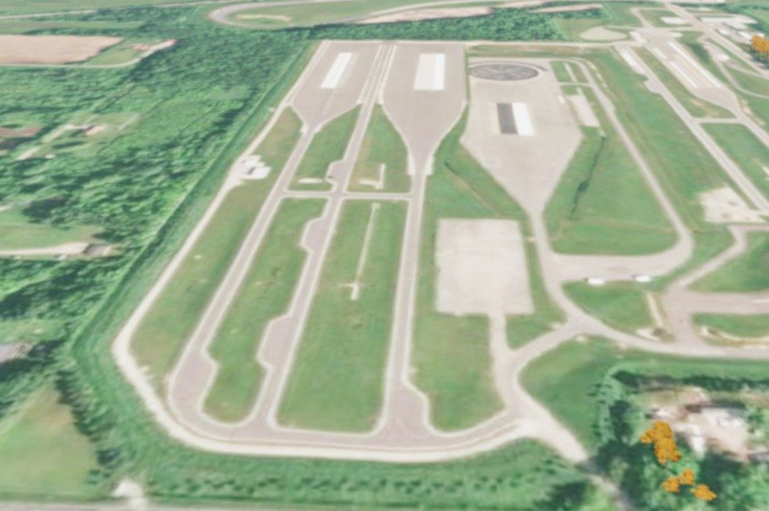
The near-term requirement is to learn how BeamNG levels and mods are made. The longer-term requirement is a driver-in-the-loop system that uses a real ESP brake system.
Background on the tire model work: BeamNG tire physics development.
The first question was where to get real-world terrain. The open question was whether the resolution would be good enough to drive on, or look terrible.
GPS data could be downloaded as a 3D model, but scans are only available for areas that have already been scanned.
Export a region, convert it to an OBJ model with OSM2World, then import it into a 3D app and delete the extra geometry.
A tool built for BeamNG that already includes the game's level structure.
| Resolution | 4096 x 4096 |
|---|---|
| Elevation source | USGS 1 m where possible. The standard 30 m source has low resolution and is offset from the satellite image. |
| Surrounding tiles | All. The vehicle will fall through them, but they give a visual base. |
| Satellite quality | Standard, the highest available. It is worse than USGS, but there are no other options. |
| Generated objects | No trees, buildings or rivers. They are inaccurate and inconsistent, and the base map is better. |
BeamNG's level system uses the satellite image as a base, limited to 5 m per pixel. It looks rough up close, but works as generic ground cover and for distant views. The baked-in global shadows also need to be removed.
Only the base map is modified, since the other layers affect visuals only.
Adding road markings and decals gives the map the details of a real place, so it does not look like it was built in Minecraft.
BeamNG recently moved to physically based rendering. A texture is described by a set of image maps that tell the engine how light behaves on it.
Each has a detail version as well. The advanced maps are not used for now.
PBR needs many maps to work with lighting. They can be generated from a single image, though not always accurately, using PBR Forge. Initial values such as macro strength, detail strength, roughness and scale came from another track, then were tuned.
| Terrain types | One folder per terrain type |
|---|---|
| Inside each | A "detail" folder and a "macro" folder |
| Each holds 5 maps | ao (ambient occlusion), b (base), h (height), nm (normal), r (roughness) |
| Material definitions | All defined in the terrain material library |
With the base map and textures in place, the map was built up in layers.
Created with MapNG.
Created base terrains with PBR textures and used the terrain painter to update every major terrain type.
Smoothed the surfaces so hills and ramps behave correctly.
Created objects for the grass terrain to give it 3D properties. Added forest and shrubs, plus placeholder buildings, parked vehicles and a bus stop.
Road and surface decals are added for visual clarity. Finishing the road work and learning to control friction by road surface.
In process of terrain painting, adding trees. No other models, roads or decals yet.
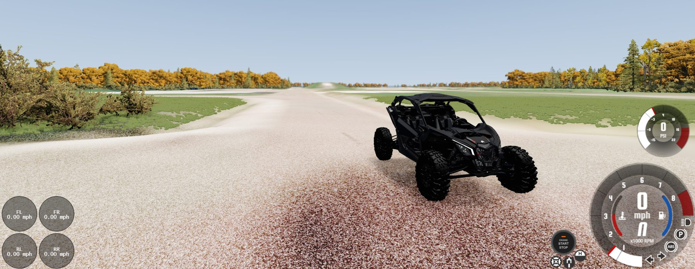
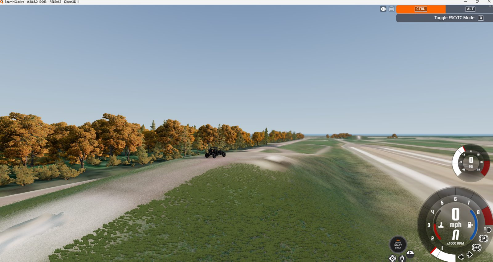
Spawn points let anyone start the track close to what they want to test.
All spawn points are in the game for now.
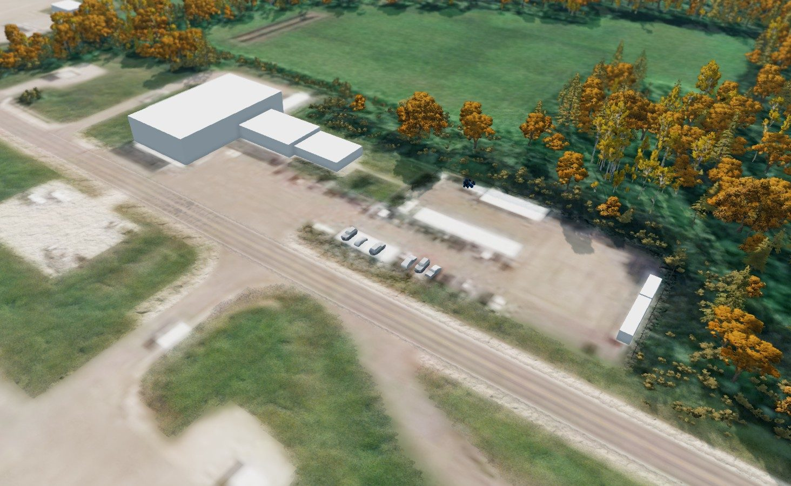
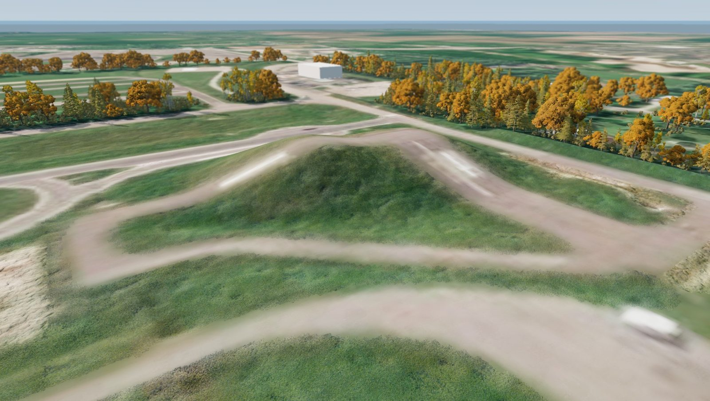
Missions are the way to introduce the simulator at work. Two types are planned, both for driver training.
Loaded from the main menu, with a custom track, vehicle and scenario.
The update broke most of the groundcover and forest assets, along with several smaller items. Forest and main grass have been fixed so far.
This phase is further down the line. It would become a work project and require the BeamNG.tech license. For now it is a learning project.
Reference: an example hardware-in-the-loop system using an external shifter.
Hi, it's-a me.
I like making things. And learning.